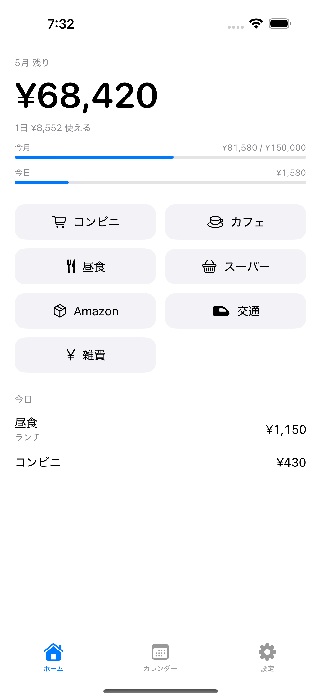
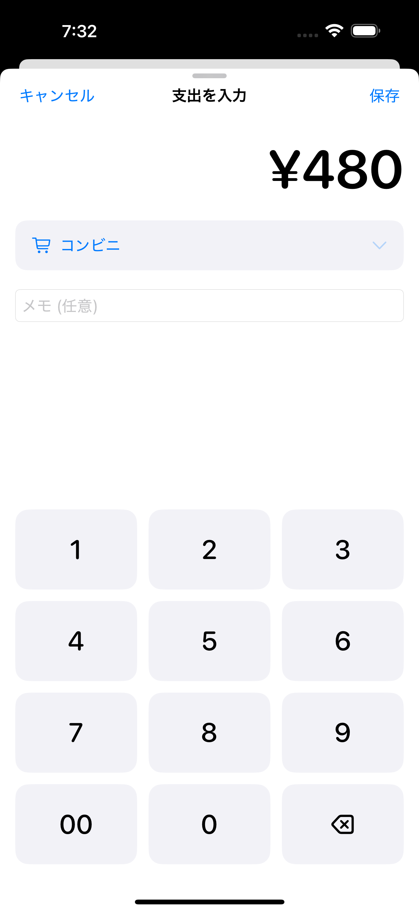
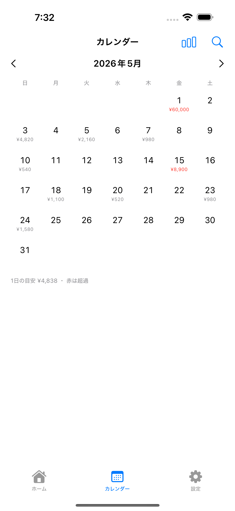
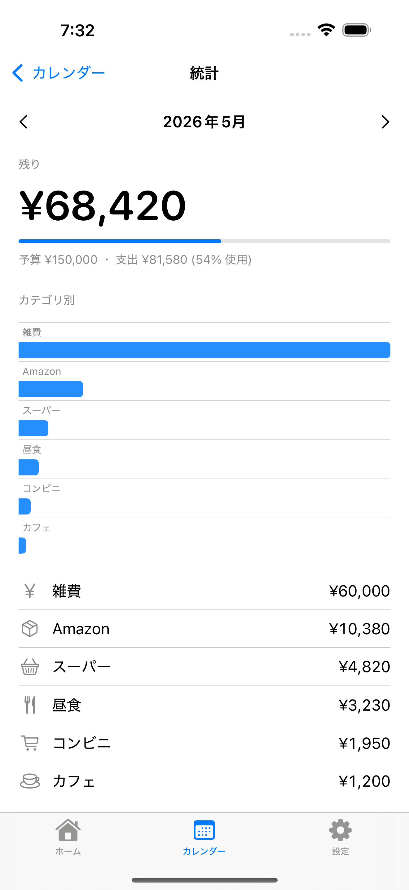
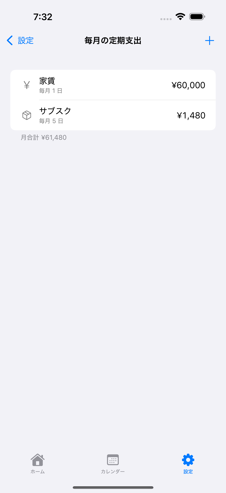

「今月、あといくら使えるか」。
nokori（のこり）は、それだけに集中するために、たくさんの機能を手放しました。広告なし・登録なし・完全オフライン。

The Concept
家計簿が続かないのは、
たいてい多すぎるから。
nokori は機能を足すのではなく、引くことで戦います。
分析グラフも、銀行連携も、レシート撮影も、AI のアドバイスもありません。残したのは「カテゴリをタップして、金額を打って、保存」という最短の動作と、残額がひと目で分かる静かな画面だけ。多機能な家計簿に疲れた人のための家計簿です。
What it does
少ない機能を、丁寧に。毎日の数秒に効くものだけを残しました。
カテゴリをタップ → 専用テンキーで金額 → 保存。片手で、3秒で。システムキーボードは使いません。
「今月あといくら」を大きく表示。今月／今日の予算ペースもバーで一目。使途の管理ではなく、残りに集中します。
カレンダーで、1日の目安額を超えた日がひと目で分かる。叱らず、静かに気づかせます。
家賃やサブスクは「毎月の定期支出」に登録すれば、毎月自動で計上。打ち直す手間はありません。
メモ・カテゴリ・金額で検索。カテゴリ別の軽い内訳で、ざっくり傾向だけ把握できます。
ホーム画面ウィジェットで残額をいつでも。記録は CSV で書き出せ、あなたの手元に残ります。
Screens




By Design
これらは「未実装」ではありません。静けさと速さを守るために、意図して持たない機能です。
引き算の先に残るのは、続けられる静けさ。
Privacy First
入力したすべてのデータは端末内にのみ保存され、外部に送信されることはありません。バックエンドも、アカウントも、トラッキングもありません。アプリを削除すれば、データもすべて消えます。